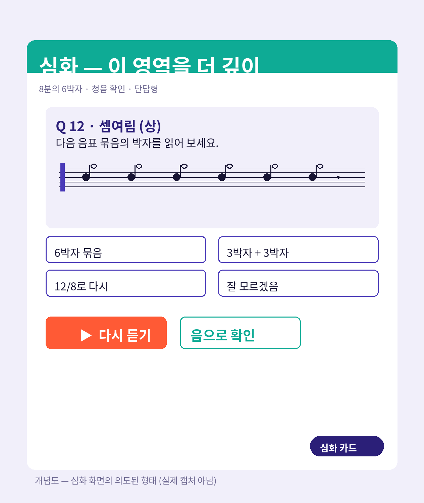
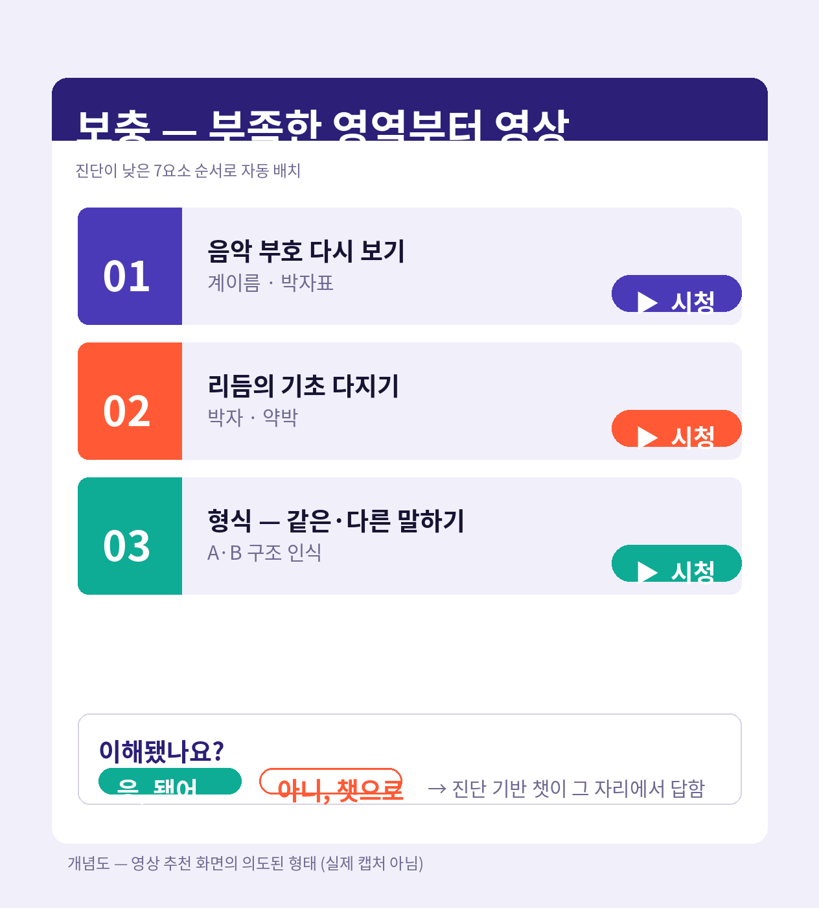

6 / 7
06 / 07
잘하는 영역은
더 깊게
, 부족한 영역은
영상으로
같은 시간 안에서 다른 학습이 일어납니다 — 진단이 다른 곳으로 다른 길을 엽니다.
Bloom · 숙달학습
Sweller · 인지부하
플립러닝 · 사전 학습
01 심화
진단이 충분한 영역 — 더 깊이

개념도 — 심화 화면의 의도된 형태
8분의 6박자 · 단답형 · 음으로 다시 듣기
보기 없애고 단답형으로 묻고, 같은 음높이를 귀로 다시 확인시킵니다. 인지부하를 줄이고 본유적 부하를 키우는 방향으로.
02 보충
부족한 영역 — 영상, 그 다음 챗

개념도 — 영상 화면의 의도된 형태
진단이 낮은 7요소 순서로 영상 배치
'이해됐나요?' 한 번 더 묻고 — 안 되면 그 자리에서 챗으로 연결. 플립러닝의 사전 학습으로.